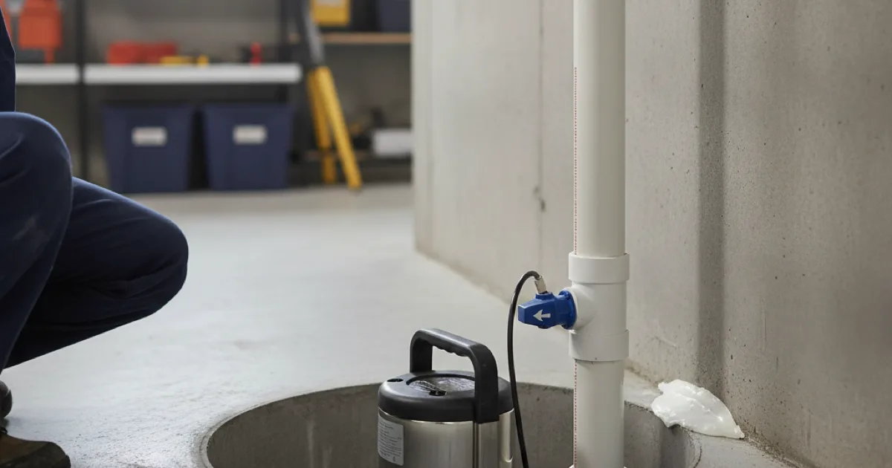

Sump Pump Installation in Westchester County, NY
A working sump pump is what keeps a finished basement dry. Dan's Drains installs and replaces sump pumps sized for your home, so heavy rain does not turn your basement into a problem.
- Licensed & Insured
- Same-Day Service Available
- Upfront Pricing
- 15+ Years Local Experience

Need a plumber in Westchester County? We can usually help the same day.
Why a Sump Pump Matters
A sump pump collects water that gathers under or around your foundation and pumps it away before it floods the basement. In a home with a finished basement, that pump is the last line of defense during heavy rain.
When a pump fails at the wrong moment, the damage can be severe, which ties directly into preventing basement water damage.
How We Install a Sump Pump
We assess your basement and water situation, set the pump in a properly prepared pit, and connect the discharge so water is carried well away from the foundation. Then we test it to confirm it kicks on and clears water as it should.
Sizing matters — we match the pump's capacity to how much water your home actually has to handle.
Talk to a local Westchester County plumber today.
Backup Pump Options
The worst floods often happen during storms that also knock out the power — exactly when a standard pump quits. A battery backup or secondary pump keeps things dry when the main pump cannot run.
We will talk through whether a backup makes sense for your basement, especially if it is finished or holds valuables.
Basements in Westchester Homes
Finished basements are common here, and our wet springs and heavy storms put them at real risk. A reliable sump pump is one of the most valuable safeguards a local homeowner can have.
The FEMA guidance on protecting homes from flooding backs this up, and we handle the pump side of keeping your basement dry.
When to Call a Pro
Call us when your basement takes on water, your current pump is old or noisy, or you have finished the basement and want protection. Getting the pump in before a storm beats scrambling during one.
If your basement also gets damp from other sources, we can check for hidden leaks adding to the moisture.
Frequently Asked Questions
How long do sump pumps last?
Many last around 7 to 10 years. If yours is older, noisy, or running constantly, it is worth replacing before it fails during a storm.
Do I need a battery backup?
If your basement is finished or floods during storms that also cut power, a backup is well worth it — that is exactly when a standard pump would otherwise fail.
How do I know if my sump pump is failing?
Watch for constant running, strange noises, or a pump that does not turn on when the pit fills. Testing it before storm season is a good habit.
Where does the water get pumped to?
We route the discharge well away from your foundation so the water does not simply drain back toward the house. Proper discharge placement is part of the install.
Can you replace just the pump if the pit is fine?
Often, yes. If the pit and discharge are in good shape, we can swap the pump itself. We will check the whole setup and advise.
Ready to book? Reach Dan’s Drains for fast, upfront plumbing help.